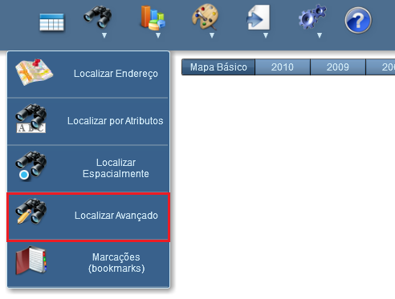
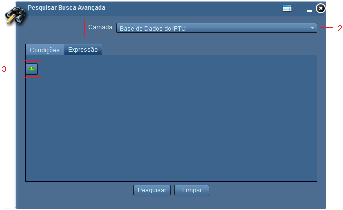
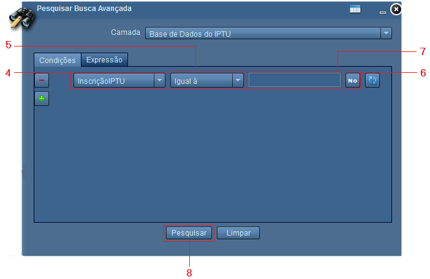

Adicionar Uma Condição
Ao clicar sobre o símbolo adicionar condições, serão visualizadas as opções para montar a condição de pesquisa. Da esquerda para direita temos:
Campo: exibe os campos da camada selecionada para pesquisa;
Operador: exibe os operadores de condição.
Valor: caixa de texto para digitação de valor.
Formato de texto: define formato de texto a ser pesquisado.
Texto normal; |
|
Texto em CAIXA ALTA |
|
Número |
|
Data |
Obter sugestão de amostra : exibe as sugestões de valores referentes ao campo selecionado.
Passos para adicionar uma condição:
1 - Clicar sobre o símbolo "Pesquisar Busca Avançada";

2 - Selecionar camada a ser pesquisada;
3 - Clicar sobre o símbolo Adicionar Condição para iniciar a construção da pesquisa;

4 - Definir qual campo será utilizado;
5 - Selecionar condição;
6 - Definir tipo de texto da expressão (Texto normal, Texto CAIXA ALTA, Data ou Número);
7 - Digitar valor;

8 - Clicar no botão "Pesquisar".